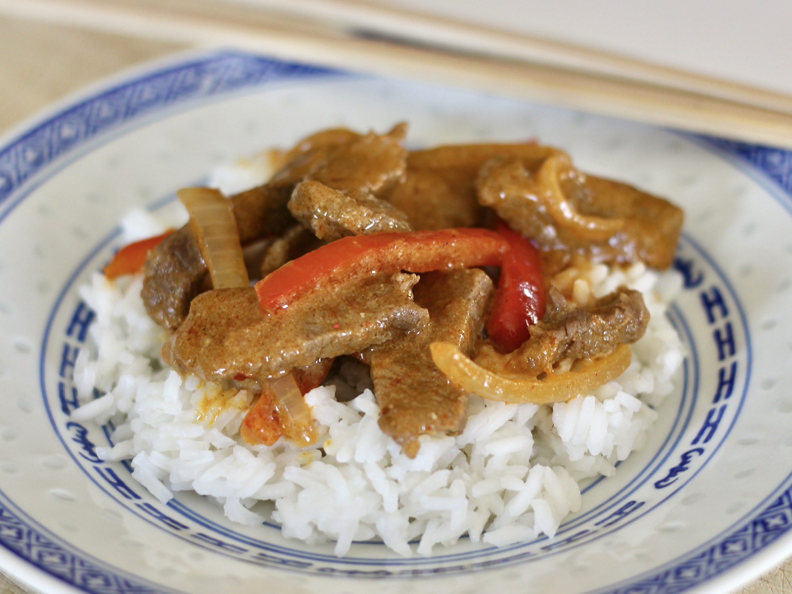

Thai beef curry

Description
My son and I doctored up a Thai beef curry recipe from a local upscale restaurant using what we had and liked. We were both impressed and will make this again. Serve over cooked rice.
Ingredients
- 1 tablespoon peanut oil
- ½ yellow onion, sliced thin
- ½ green bell pepper, sliced into 1/4-inch strips
- ½ red bell pepper, sliced into 1/4-inch strips
- 1 (14 ounce) can coconut milk
- 3 tablespoons lime juice
- 2 tablespoons fish sauce
- 2 tablespoons red curry paste, or more to taste
- 1 tablespoon white sugar
- 1 tablespoon soy sauce
- 1 tablespoon peanut sauce, or more to taste (Optional)
- 1 teaspoon Worcestershire sauce
- ¼ teaspoon ground turmeric
- ⅛ teaspoon garlic salt, or more to taste
- ⅛ teaspoon curry powder, or more to taste
- ⅛ teaspoon garam masala, or more to taste
- 2 dashes chile-garlic sauce (such as Sriracha®)
- 1 ½ pounds sirloin steak, cut into strips
- ⅓ cup peanuts, chopped
Steps
- Heat peanut oil over medium heat in a large wok until it sizzles. Add onion and green and red bell peppers. Stir-fry until tender, 5 to 7 minute. Transfer to a bowl.
- Pour coconut milk into the wok. Reduce heat to low and simmer 3 to 5 minutes. Add lime juice, fish sauce, curry paste, sugar, soy sauce, peanut sauce, Worcestershire, turmeric, garlic salt, curry powder, garam masala, and chile-garlic sauce. Stir to combine and adjust to taste.
- Increase heat to medium; stir steak and vegetable mixture into the wok. Cook until mixture has thickened and reduced and steak is firm and hot in the center, about 10 minutes. Remove from heat and top with peanuts.